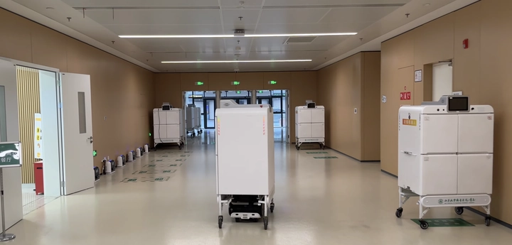
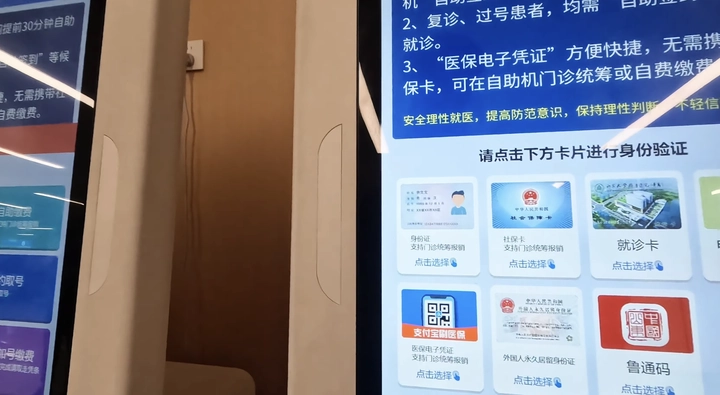
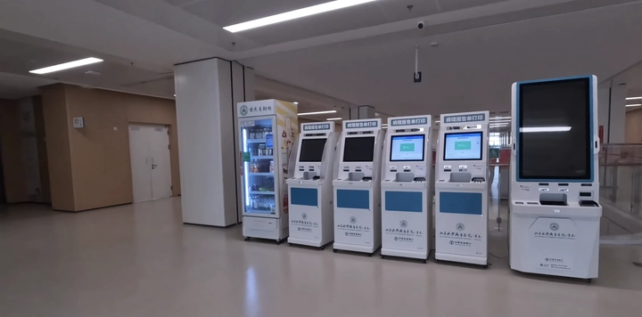
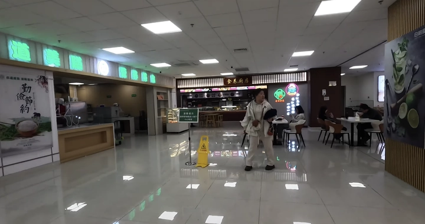

Bệnh viện Thanh Đảo – Trung Quốc: trải nghiệm đi lạc vào tương lai
Trung Quốc đang mở ra một kỷ nguyên mới cho ngành y tế với những bệnh viện hiện đại, nơi công nghệ và chăm sóc sức khỏe hòa quyện để mang đến trải nghiệm hoàn toàn khác biệt cho bệnh nhân.
Một trong những biểu tượng nổi bật của xu hướng này chính là Bệnh viện Thanh Đảo (Qing Dao) – nơi mỗi chi tiết, từ đăng ký khám bệnh, di chuyển trong khuôn viên cho đến nhận thuốc và ăn uống, đều được tối ưu hóa bằng công nghệ tiên tiến.
Tại đây, bệnh nhân không chỉ được chữa trị mà còn được trải nghiệm một hệ thống y tế thông minh, tiện lợi và nhanh chóng, nơi mà robot AI, bản đồ số và máy tính thông minh cùng nhau vận hành, biến việc đi khám bệnh trở thành một hành trình thuận tiện, hiện đại và gần như cá nhân hóa.
1. Trải nghiệm bệnh viện như đang ở tương lai
Ngay từ khi bước chân vào bệnh viện, bệnh nhân đã được chào đón bằng một trải nghiệm hoàn toàn khác biệt so với các bệnh viện truyền thống. Thay vì phải loay hoay tìm phòng khám hay khoa mình cần đến, bệnh nhân sẽ được hướng dẫn chi tiết thông qua hệ thống bản đồ số hiện đại, hiển thị vị trí chính xác của từng khoa, từng phòng khám, thậm chí cả các tiện ích phụ trợ như phòng chờ, khu vệ sinh hay quầy thông tin.
Hệ thống này còn cho phép người dùng tùy chọn lộ trình di chuyển phù hợp: có thể đi bằng thang cuốn, thang máy thông thường hoặc thang máy khẩn cấp nếu cần di chuyển nhanh. Mọi lựa chọn đều được hiển thị trực quan trên màn hình kỹ thuật số, giúp bệnh nhân chủ động hơn trong việc điều hướng trong bệnh viện.
Không chỉ mang lại sự tiện lợi, trải nghiệm này còn tạo cảm giác được phục vụ như VIP. Mọi bước đi, từ lúc đăng ký, di chuyển cho đến khi tìm phòng khám, đều được thiết kế để giảm thiểu sự lộn xộn và căng thẳng. Ngay cả những bệnh nhân lần đầu tiên đến cũng không cần bỡ ngỡ, vì bản đồ số hướng dẫn từng chi tiết một cách rõ ràng.

Bên cạnh đó, hệ thống còn kết hợp với màn hình hiển thị thông minh tại các lối đi và sảnh lớn, cho phép bệnh nhân cập nhật liên tục tình trạng phòng khám, lịch hẹn và các thông tin cần thiết khác. Nhờ đó, trải nghiệm trong bệnh viện không còn căng thẳng, rối rắm mà trở nên trơn tru, nhanh chóng và hiện đại, như đang được phục vụ tại một trung tâm cao cấp hay khách sạn 5 sao, thay vì nơi chỉ để khám chữa bệnh.
Tất cả những tiện ích này cùng nhau tạo nên một bệnh viện tương lai, nơi mà công nghệ không chỉ phục vụ cho hiệu quả y tế mà còn nâng tầm trải nghiệm của bệnh nhân, khiến mỗi lần khám bệnh trở thành một hành trình thuận tiện, dễ chịu và gần như cá nhân hóa.
2. Đặt lịch khám với máy tính thông minh
Một trong những điểm nổi bật tại Bệnh viện Thanh Đảo là hệ thống máy tính thông minh đặt lịch khám tự động, trải đều ở hầu hết các tầng. Thay vì phải xếp hàng dài hay tìm quầy đăng ký, bệnh nhân chỉ cần đưa thẻ bệnh viện hoặc giấy tờ tùy thân vào máy, chọn khoa, bác sĩ, ngày giờ khám và thực hiện thanh toán nhanh chóng qua Alipay hoặc WeChat.
Điều đặc biệt là hệ thống này cực kỳ thân thiện và dễ sử dụng, ngay cả với những người lần đầu đến bệnh viện. Bạn có thể lựa chọn bác sĩ theo cấp độ chuyên môn: từ bác sĩ thường đến trưởng khoa, tất cả đều hiển thị rõ ràng với giá cả minh bạch. Một lần khám bình thường chỉ khoảng 7 tệ, còn muốn gặp trưởng khoa chỉ mất 19 tệ – rẻ hơn nhiều so với một bữa ăn tại McDonald.

Hệ thống này không chỉ giúp tiết kiệm thời gian mà còn giảm thiểu sự nhầm lẫn, tạo sự chủ động và linh hoạt cho bệnh nhân. Với công nghệ này, việc đặt lịch khám trở nên nhanh chóng, tiện lợi và gần như tự động hóa hoàn toàn, biến quy trình khám bệnh vốn căng thẳng thành trải nghiệm dễ chịu và hiện đại.
3. Robot AI phục vụ bệnh viện
Một yếu tố khiến Bệnh viện Thanh Đảo nổi bật là hệ thống robot AI vận hành khắp bệnh viện. Những robot này có khả năng vận chuyển thuốc, mẫu xét nghiệm, thực phẩm đến từng phòng bệnh một cách chính xác và nhanh chóng, giúp bác sĩ và y tá tiết kiệm thời gian di chuyển và tập trung vào công tác chuyên môn.
Điều ấn tượng là robot tại đây được thiết kế thông minh và linh hoạt: khi không hoạt động, chúng sẽ tự động “nghỉ ngơi” và sạc pin không dây. Một số robot còn chịu trách nhiệm giao đồ ăn từ căn-tin hoặc cửa hàng 24/7 lên tận phòng bệnh nhân, đảm bảo mọi nhu cầu đều được đáp ứng mà không cần bệnh nhân phải di chuyển.
Nhờ robot AI, mọi hoạt động trong bệnh viện trở nên liên tục và trơn tru, từ việc vận chuyển thuốc đến hỗ trợ các phòng khám, góp phần nâng cao hiệu quả và chất lượng chăm sóc sức khỏe. Đây là minh chứng rõ ràng cho việc công nghệ không chỉ hỗ trợ y tế mà còn cải thiện trải nghiệm tổng thể của bệnh nhân.
4. Hệ thống tự động thông minh khác
Ngoài robot, bệnh viện còn sở hữu nhiều thiết bị tự động thông minh khác, tạo nên một môi trường khám chữa bệnh hiện đại:
-
Tủ thông minh (smart cabinet): Hệ thống tự động tính tiền dựa trên trọng lượng và mã IFD của sản phẩm. Khi bệnh nhân chọn đồ uống, thuốc hoặc vật dụng cần thiết, tủ sẽ quét mã, cân trọng lượng và tính tiền chính xác, giảm thiểu sai sót và thời gian chờ đợi.
-
Máy in kết quả và in giấy tờ: Chỉ cần quét thẻ bệnh viện hoặc thẻ cư trú, bệnh nhân có thể in ngay kết quả xét nghiệm, đơn thuốc hoặc giấy tờ cần thiết cho công việc, hoàn toàn không phải xếp hàng.
-
Hệ thống kiểm tra thị lực miễn phí: Một số khu vực trong bệnh viện cung cấp kiểm tra mắt miễn phí với tư vấn chuyên sâu từ các chuyên gia, giúp bệnh nhân vừa tiện lợi vừa tiết kiệm chi phí.
Tất cả những công nghệ này được thiết kế để tối ưu hóa trải nghiệm bệnh nhân, giảm thiểu thủ tục rườm rà, đồng thời giúp bệnh viện hoạt động hiệu quả hơn.
5. Môi trường bệnh viện hiện đại và tiện nghi
Bệnh viện Thanh Đảo không chỉ hiện đại về công nghệ mà còn chú trọng đến môi trường và tiện nghi. Khuôn viên bệnh viện sạch sẽ, rộng rãi, kết hợp nhiều tiện ích để bệnh nhân cảm thấy thoải mái như ở trung tâm thương mại: có khu ăn uống với nhiều lựa chọn ẩm thực, thanh toán nhanh bằng QR code, và phục vụ tận nơi thông qua robot giao đồ.
Bệnh viện còn trang bị thang cuốn tiết kiệm điện, chỉ hoạt động khi có người, cùng các tiện ích như ghế lăn, quần áo cho bệnh nhân nội trú được cung cấp qua tủ thông minh. Tất cả những chi tiết này không chỉ tạo sự thuận tiện mà còn giúp bệnh nhân và người nhà cảm thấy an tâm và hài lòng.

Môi trường hiện đại, sạch sẽ kết hợp với công nghệ thông minh khiến bệnh viện trở nên thoải mái, nhanh chóng và gần như không còn áp lực khi đến khám, biến mỗi lần đi bệnh viện trở thành trải nghiệm tiện nghi, chuyên nghiệp và gần gũi với đời sống hàng ngày.
6. Hệ thống y tá và bác sĩ được hỗ trợ tối đa bởi công nghệ
Tại Bệnh viện Thanh Đảo, công nghệ không chỉ phục vụ bệnh nhân mà còn hỗ trợ tối đa cho đội ngũ y bác sĩ. Các bác sĩ được cung cấp thông tin đầy đủ về lịch khám, hồ sơ bệnh án và các chỉ số xét nghiệm ngay trên máy tính hoặc thiết bị di động.
Các robot vận chuyển mẫu xét nghiệm và thuốc giúp y tá giảm bớt công việc thủ công, nhờ đó họ có thể tập trung chăm sóc trực tiếp bệnh nhân. Hệ thống cũng tích hợp thông báo tự động nhắc lịch khám, cảnh báo kết quả xét nghiệm bất thường, giúp bác sĩ ra quyết định nhanh hơn và chính xác hơn.
Nhờ sự kết hợp giữa con người và công nghệ, bệnh viện vận hành nhanh chóng, hiệu quả, và gần như không có sự chậm trễ trong quy trình khám chữa bệnh, đồng thời nâng cao chất lượng chăm sóc y tế toàn diện.
7. Trải nghiệm nhận thuốc và giấy tờ nhanh chóng
Sau khi khám xong, bệnh nhân có thể nhận thuốc và các giấy tờ cần thiết mà không phải xếp hàng lâu. Bệnh viện sử dụng hệ thống tủ thuốc và máy in kết quả tự động: chỉ cần quét thẻ bệnh viện hoặc thẻ cư trú, hệ thống sẽ cung cấp thuốc hoặc in kết quả xét nghiệm ngay lập tức.
Một số robot sẽ giao thuốc tận phòng bệnh nhân nội trú, giúp giảm thiểu tiếp xúc và tiết kiệm thời gian. Hệ thống thanh toán tự động tích hợp với Alipay, WeChat và thẻ bệnh viện, đảm bảo mọi thao tác nhanh chóng, chính xác và minh bạch.
Quy trình này không chỉ tiện lợi mà còn giảm thiểu rủi ro sai sót, nâng cao trải nghiệm bệnh nhân và người nhà, biến việc nhận thuốc và giấy tờ trở thành một trải nghiệm nhanh gọn, hiện đại và gần như không chờ đợi.
8. Khu ăn uống và tiện ích nội khu
Bệnh viện Thanh Đảo còn chú trọng đến tiện nghi và nhu cầu sinh hoạt của bệnh nhân, không chỉ dừng lại ở y tế. Tại đây có khu ăn uống rộng rãi, giống trung tâm thương mại, cung cấp nhiều loại đồ ăn nhanh, thực phẩm tươi sống, và thanh toán dễ dàng bằng QR code.
Các robot giao đồ ăn sẽ vận chuyển thức ăn từ căn-tin hoặc cửa hàng 24/7 đến phòng bệnh nhân, kể cả trên các tầng cao. Ngoài ra, bệnh viện còn có cửa hàng tiện lợi 24/7, nơi bệnh nhân và người nhà có thể mua đồ dùng, trái cây hoặc đồ ăn nhẹ mọi lúc.

Các tiện ích này đảm bảo rằng bệnh nhân không chỉ được chữa trị mà còn được chăm sóc toàn diện, từ sức khỏe đến nhu cầu ăn uống, giúp trải nghiệm tại bệnh viện trở nên thoải mái, tiện nghi và gần gũi với đời sống hiện đại.
9. Tính minh bạch và chi phí hợp lý
Một trong những yếu tố tạo nên sức hấp dẫn của Bệnh viện Thanh Đảo là chi phí khám chữa bệnh cực kỳ hợp lý. Một lần khám bình thường chỉ tốn khoảng 7 tệ, còn gặp trưởng khoa chỉ mất 19 tệ – rẻ hơn nhiều so với một bữa ăn tại McDonald.
Ngoài ra, mọi giao dịch đều được thực hiện minh bạch và tự động hóa. Từ thanh toán khám bệnh, mua thuốc, đến đồ ăn và tiện ích nội khu, tất cả đều sử dụng hệ thống thẻ bệnh viện, QR code, Alipay hoặc WeChat, giúp bệnh nhân theo dõi chi phí dễ dàng và tránh mọi nhầm lẫn.
Cách tổ chức này giúp bệnh viện vừa tiết kiệm thời gian, vừa đảm bảo minh bạch tài chính, đồng thời tạo trải nghiệm y tế công bằng và tiện lợi cho mọi đối tượng, từ người dân địa phương đến bệnh nhân quốc tế.
10. Bệnh viện tương lai: nơi công nghệ gặp chăm sóc sức khỏe
Tất cả các yếu tố kể trên – từ bản đồ số, máy tính thông minh, robot AI, tủ thông minh, máy in kết quả, hệ thống kiểm tra mắt miễn phí, khu ăn uống tiện nghi – đều hòa quyện để tạo nên một bệnh viện tương lai tại Trung Quốc.
Tại đây, công nghệ không chỉ đơn thuần hỗ trợ khám chữa bệnh mà còn nâng tầm trải nghiệm bệnh nhân, giúp mọi bước đi trong bệnh viện trở nên thuận tiện, nhanh chóng và cá nhân hóa. Người bệnh được chăm sóc như VIP, đội ngũ y bác sĩ hoạt động hiệu quả, và mọi quy trình đều minh bạch, thông minh và thân thiện.
Bệnh viện Thanh Đảo là minh chứng rõ ràng rằng công nghệ, y tế và trải nghiệm người dùng hoàn toàn có thể hòa hợp, mở ra tầm nhìn về tương lai của ngành y tế – nơi mà mỗi lần khám bệnh là một trải nghiệm hiện đại, tiện nghi và an tâm.
Kết luận
Bệnh viện tại Thanh Đảo là minh chứng sống động cho tương lai của ngành y tế, nơi công nghệ hiện đại và chăm sóc sức khỏe kết hợp một cách hoàn hảo. Từ bản đồ số dẫn đường, máy tính thông minh đặt lịch khám, robot AI vận chuyển thuốc và thực phẩm, tủ thông minh, đến các tiện ích nội khu như khu ăn uống và cửa hàng 24/7 – tất cả đều hướng đến một trải nghiệm nhanh chóng, tiện lợi và gần như cá nhân hóa cho bệnh nhân.
Không chỉ bệnh nhân hưởng lợi, đội ngũ y bác sĩ cũng được hỗ trợ tối đa, giúp họ tập trung vào việc chăm sóc và chữa trị, nâng cao hiệu quả công việc. Với chi phí hợp lý, minh bạch và môi trường hiện đại, bệnh viện Chinga chứng minh rằng công nghệ không chỉ là công cụ, mà là cầu nối giữa con người và chăm sóc y tế chất lượng cao. Đây là tầm nhìn về một bệnh viện tương lai, nơi mỗi lần khám bệnh không còn là trải nghiệm căng thẳng mà là một hành trình thông minh, tiện nghi và đầy an tâm.